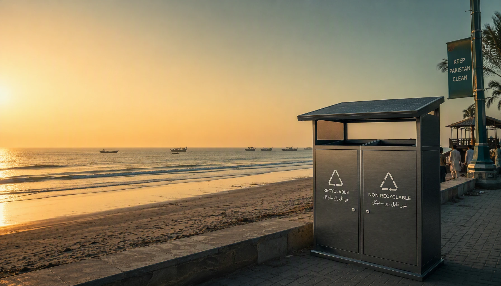
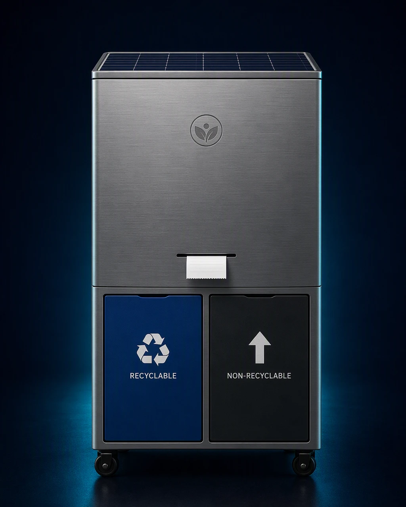
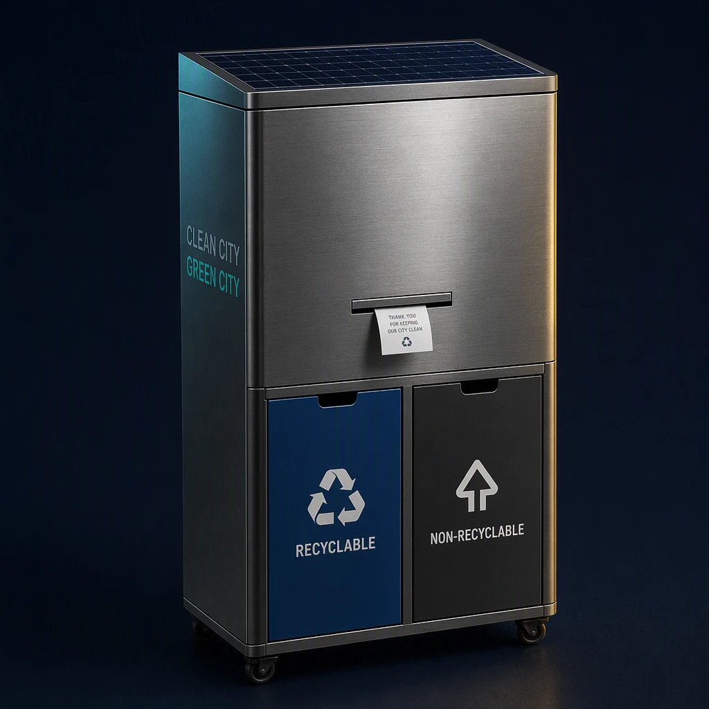
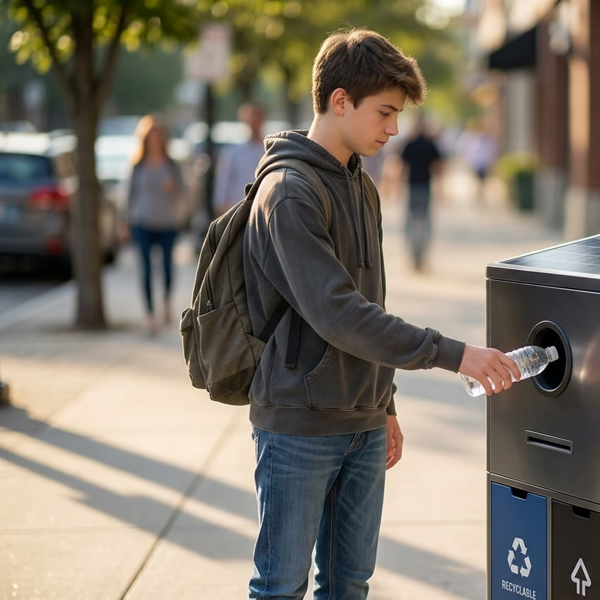
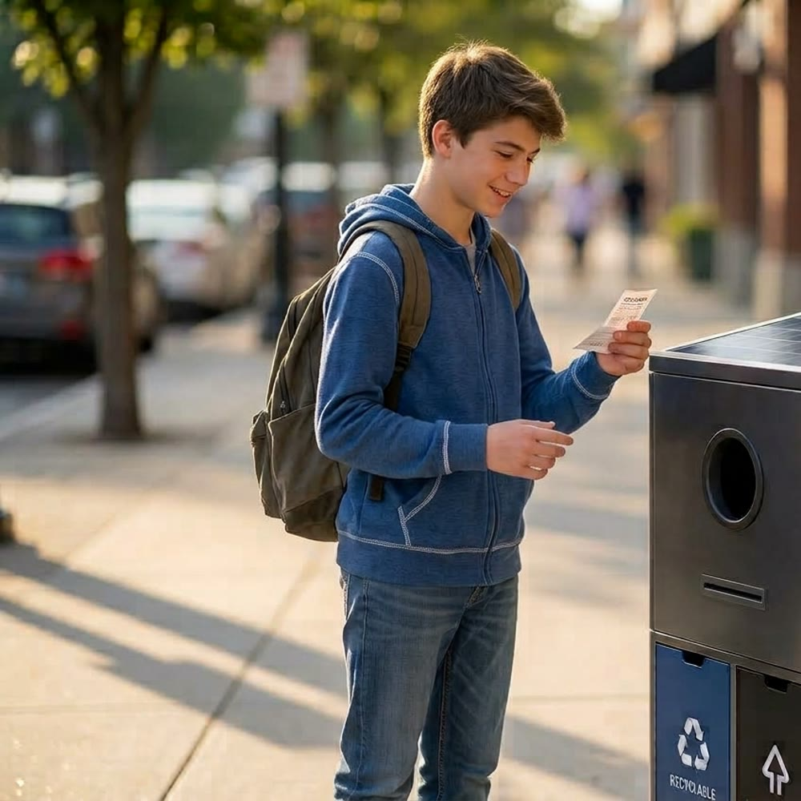

0
tonnes/year
Plastic enters Arabian Sea via Indus River
Schmidt et al., 2017

Clean City · Green City
AI-Powered Waste Management for Pakistan’s Tourist Places
Solving Pakistan’s beach plastic crisis — one smart bin at a time, on beaches, parks & tourist hubs.
Step 1 — The Problem
Beaches, parks and tourist hubs across Pakistan are on the front line. The numbers below are the crisis our tourist places face every single day.
0
tonnes/year
Plastic enters Arabian Sea via Indus River
Schmidt et al., 2017
0%
of beach debris
Is plastic — bottles, bags & packaging
WWF-Pakistan 2019
0th
globally
Pakistan’s rank as plastic waste producer
World Pop. Review
0%
untreated
Karachi wastewater discharged to Arabian Sea
WWF-Pakistan
Clifton & Sandspit beaches (Karachi)
0% & 0%
Flip for detail
Plastic makes up 47% and 45% of all debris — bottles, bags, packaging dominate every tide.
Gwadar & Kund Malir (Balochistan)
Tourism declining
Flip for detail
Abandoned fishing nets, dead turtles with plastic in stomachs, tourism already declining.
Hawksbay sediment samples
0% / 0%
Flip for detail
100% of Hawksbay sediment samples contain microplastics — 85% are fibres entering the food chain through fish.
Karachi daily waste
12–13K tonnes/day
Flip for detail
Pakistan generates 12–13K tonnes of waste per day in Karachi alone; up to 40% reaches the sea uncollected.
Indus → Arabian Sea
0 MT/yr
Flip for detail
10,000 MT of microplastics flow from the Indus into the Arabian Sea every year.
Frontiers in Marine Science, 2026
Sources: Schmidt et al. (2017) | WWF-Pakistan (2019) | Ecol. Eng. J. (2025) | J. Coastal Research (2024) | Frontiers Marine Sci (2026)
The Effect — Why It Works
SmartBin Pro turns waste disposal from a burden into a community reward loop.
Step 2 — The Solution
A single rugged station for beaches, parks and tourist hubs — solar-powered, self-sorting and self-reporting.
100% off-grid operation — no electricity bills, works day & night
Smart sensors detect, sort & classify recyclable vs non-recyclable waste automatically
Compresses waste 3×–5×; stores 300–500 kg equivalent vs 100 kg in normal bins
Bin sends automatic alert to nearest municipal committee when full — zero manual monitoring
Every depositor receives a printed coupon redeemable at nearby food stalls & shops
Dust-resistant acid-proof exterior; installed under existing CCTV cameras for security
Physical size: 240–300 L | After compression: handles 300–500 kg equivalent waste


Built with local but durable materials — no imported heavy machinery; affordable, practical, repairable by local technicians
Separate slots for Recyclable and Non-Recyclable waste — users guided by clear labels
Acid-proof, dust-resistant casing withstands coastal salt air and monsoon weather year-round
Each bin is sited where surveillance cameras already exist — printer and electronics protected from theft
Lockable side panel allows technicians to service internal components quickly without vandalism risk
The Working
Five steps run on solar power alone — no grid, no manual monitoring, no operator on site.
Smart sensors detect, sort & classify recyclable vs non-recyclable waste automatically
Compresses waste 3×–5×; stores 300–500 kg equivalent vs 100 kg in normal bins
Bin sends automatic alert to nearest municipal committee when full — zero manual monitoring
Every depositor receives a printed coupon redeemable at nearby food stalls & shops
Coupons drive foot traffic to nearby food stalls & small vendors — the habit loops
Reward Coupon Journey
How It Works

